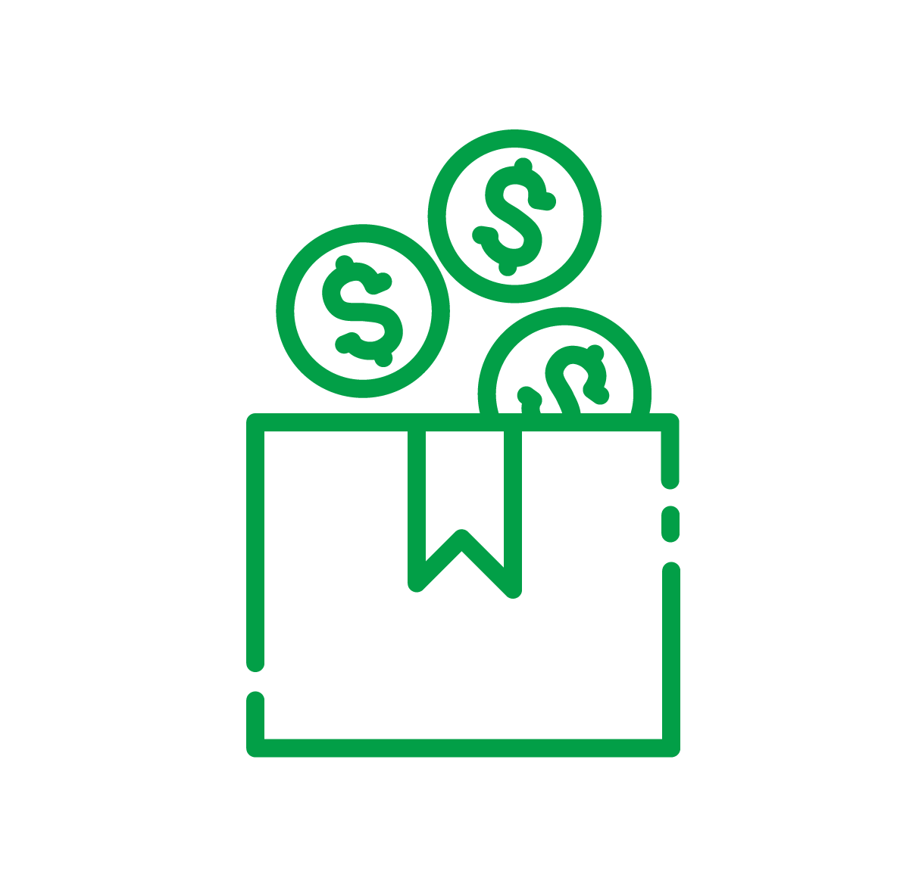

<div class="container-fluid mb-md-5">
  <app-spinner filterBy="products"></app-spinner>
  <ng-container *ngIf="products">
  <div class="row justify-content-center mt-md-5">
    <div class="col-10">

        <p class="text-muted">{{'shop.text'|translate}}</p>
    </div>
  </div>

  <div class="row justify-content-center mt-md-5 mb-md-5">
    <div class="col-md-2 grid-margin stretch-card" *ngFor="let product of products">
      <div class="card bg-light shadow"  >
        <ng-container *ngIf="product.images">

          
        </ng-container>

        

        <div class="card-body">
          <h5 class="card-title text-center"><a style="cursor: pointer"  >
            {{(translate.currentLang=='eng')?product.title_eng:(translate.currentLang=='rus')?product.title_rus:product.title_kz}} </a></h5>
          <p class="card-text  text-center">Cost: {{product.cost}} </p>
          <hr/>
          <div class="row">
            <div class="col d-flex ">
              <button mat-icon-button aria-label="Example icon button with an eye icon">


                <mat-icon>remove_red_eye</mat-icon>
                <span>{{product.views}}</span>
              </button>
            </div>
            <div class="col d-flex ">
              <button mat-icon-button aria-label="Example icon button with a heart icon" class="ml-auto">
                <mat-icon *ngIf="!product.liked" (click)="like(product)">favorite_border</mat-icon>
                <mat-icon *ngIf="product.liked" (click)="unlike(product)">favorite</mat-icon>
                <span>{{product.likes.length}}</span>
              </button>

            </div>
          </div>
        </div>
      </div>

    </div>


  </div>
</ng-container>

<div>
    <ngb-pagination class="d-flex justify-content-end" (pageChange)="changePage($event)" [ellipses]="true"  [collectionSize]="totalProductsCount" maxSize="5" [(page)]="page" [pageSize]="perPageCount" [rotate]="true" [boundaryLinks]="true"></ngb-pagination>

  </div>


</div>
